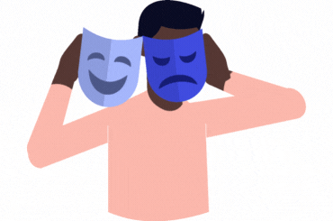

This section delves into my understanding of society, culture, and human behavior from a sociological and anthropological perspective.
Based on our previous topic about the theories under Socio-anthropological Self, I resonated the most with Charles Cooley's theory, "The Looking Glass Self." I often see myself based on how other people think of me. It's like I'm looking in a mirror, but the mirror is actually other people's faces and reactions. It's kinda crazy when you think about it, but it makes a lot of sense when I look at my own life. In elementary school, I really wanted to be part of the "cool" group. I started dressing like them, listening to their music, and even trying to act like them. But it never felt right. I realized I was trying to be someone I wasn't, just to fit in. This theory helped me understand that I was trying to create a "self" based on what I thought they valued, not what I valued.
